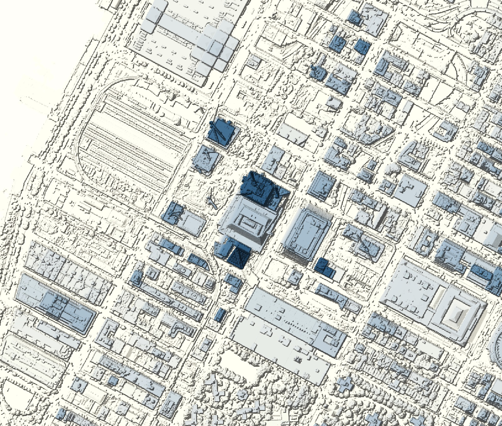
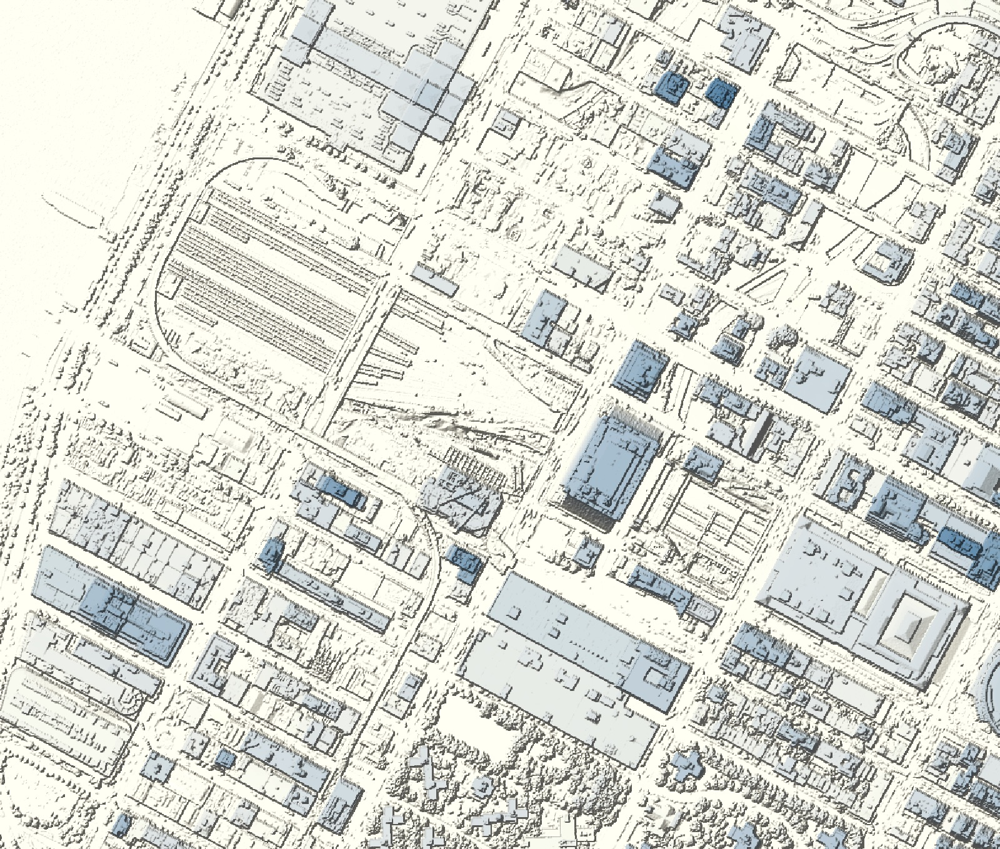
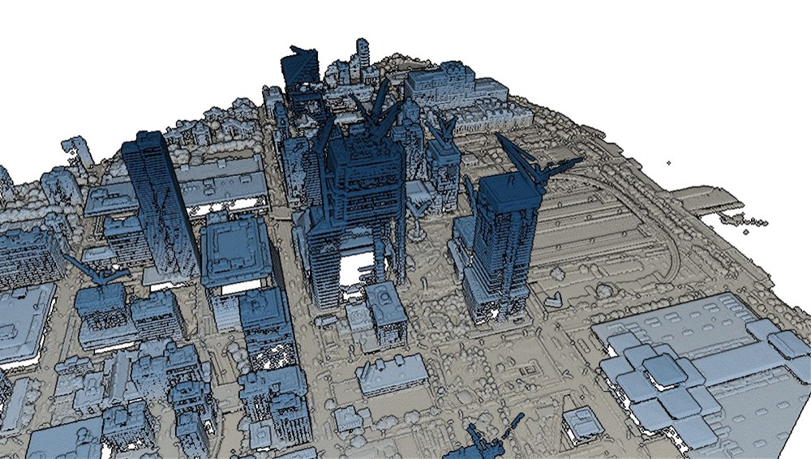
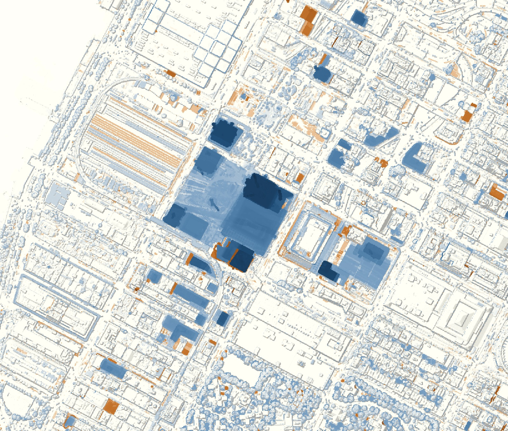

Plate IV · LiDAR change detection · 2014–2017
Measuring the Rise of Hudson Yards
Two LiDAR flights, three years apart, and six million cubic metres of new city.
- Net volume added
- 6,317,000 m³
- Largest tower rise
- 217.0 m (30 HY)
- Level of detection
- ±0.71 m
- Match to published heights
- ≤ 3% (4 of 5)
Between the spring of 2014 and the spring of 2017, the eastern rail yard on Manhattan's far west side disappeared under a platform and a cluster of towers. I wanted to know how much city that was, in metres and cubic metres, and whether it could be measured from the air.
NOAA flew LiDAR over the area in both years. I built a 1 m surface model from each flight, subtracted one from the other, and checked the result against streets that didn't change and against published building heights.


From point cloud to surface
The 2014 flight gave 8.4 million points over the study area; the 2017 flight, almost four times denser, gave 31.2 million. Both came in the same coordinate system (NAD83(2011) UTM 18N, heights in metres above NAVD88), so nothing needed reprojecting.
I removed points flagged as noise and stray points below roofs, while keeping the genuinely low points in the rail-yard pits. Each 1 m cell takes the highest point inside it, on exactly the same grid in both years. Before measuring change, a shape filter replaced most construction cranes with the surface around them.


30 Hudson Yards +217.0 m 10 Hudson Yards +214.5 m 55 Hudson Yards +154.0 m 35 Hudson Yards +86.0 m 15 Hudson Yards +109.5 m The Shed +50.5 m The Eugene +200.0 m One Manhattan West +71.5 m Western rail yard control, 0.0 mWhat changed
The study area gained 6,615,000 m³ and lost 298,000 m³, a net gain of 6,317,000 m³. Eighty-eight percent of the gained volume sits on or within 30 m of the named sites, and the eastern rail-yard block alone accounts for just over half of everything added.
| 10 Hudson Yards | 45.5 → 260.0 |
|---|---|
| 30 Hudson Yards* | 2.5 → 219.5 |
| The Eugene | 13.9 → 213.9 |
| 55 Hudson Yards* | 24.2 → 178.2 |
| 15 Hudson Yards* | 4.9 → 114.4 |
| 35 Hudson Yards* | 0 → 83.3 |
| One Manhattan West* | 0.7 → 72.2 |
| The Shed* | 2.7 → 53.2 |
| 30 Hudson Yards* | 1,100,000 |
|---|---|
| Shops & Restaurants podium* | 792,000 |
| 10 Hudson Yards | 590,000 |
| 55 Hudson Yards* | 476,000 |
| The Eugene | 252,000 |
| Open areas of the platform | 230,000 |
| 35 Hudson Yards* | 205,000 |
| The Shed* | 162,000 |
| One Manhattan West* | 149,000 |
| 15 Hudson Yards* | 140,000 |
| Public Square & Gardens | 109,000 |
| Western rail yard (control) | 5,010 |
How far to trust it
On streets that didn't change, the two surfaces differ by +0.03 m on average (standard deviation 0.11 m). Across all stable streets and older roofs the standard deviation is 0.36 m, so I treated any change smaller than 0.71 m as noise. Shifting one surface by up to 2 m in any direction didn't improve the match, so the flights line up horizontally. The river even reads −0.70 m in 2014, against −0.67 m at the Battery tide gauge during the flight.
| Building | Published | LiDAR, 2017 | Difference |
|---|---|---|---|
| 10 Hudson Yards | 267.7 m | 268.9 m | +0.4% |
| The Eugene | 222.5 m | 217.2 m | −2.4% |
| The Ohm | 121.2 m | 123.9 m | +2.2% |
| Abington House | 111.2 m | 114.4 m | +2.9% |
| Five Manhattan West | 79.9 m | 88.1 m | +10.3%1 |